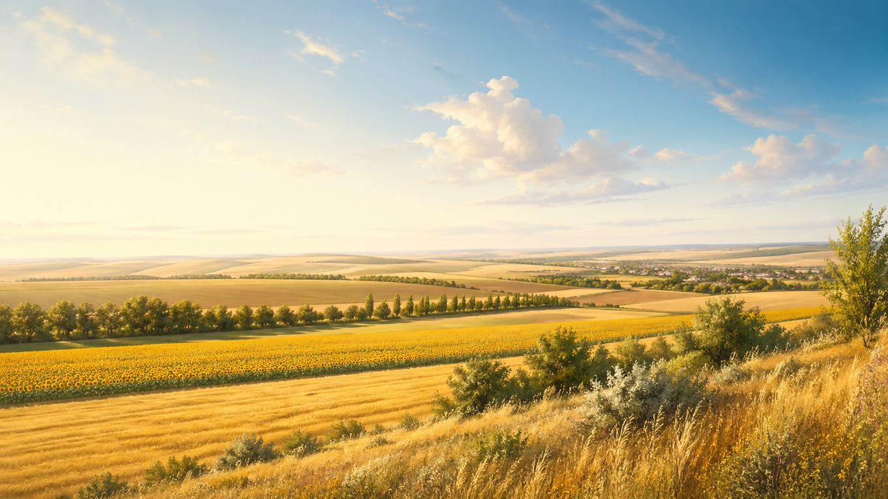

Главная / Белгородская область / центральная зона

Белгородская область · центральная зона
Что посадить в центральной зоне
Центральная часть Белгородской области хорошо подходит для садов, ягодников и базового огорода: здесь уверенно работают яблоня, груша, овощные гряды и многие плодовые культуры, а самые теплолюбивые варианты лучше вести с укрытием.
Культуры и рекомендации
По умолчанию культуры отсортированы по надёжности: сначала надёжные, затем рекомендованные, с укрытием и рискованные. Сроки посадки ориентировочные: их стоит уточнять по погоде конкретного сезона.
| Культура | Категория | Рекомендация | Где лучше | Сроки | Комментарий |
|---|---|---|---|---|---|
| Вишняплодовое дерево | Плодовые | Надежно | Сад | Саженцы: апрель или сентябрь; формировка — ранняя весна. | Одна из самых устойчивых плодовых культур для области; важны свет и проветривание. |
| Гороховощная бобовая культура | Овощи | Надежно | Открытый грунт | Посев: апрель–май, как только почва готова к обработке. | Хорошо удаётся при раннем посеве и умеренной влажности в период цветения. |
| Грушаплодовое дерево | Плодовые | Надежно | Сад | Саженцы: апрель или сентябрь–октябрь; формировка — весной. | На удачных участках стабильно растёт и зимует; лучше выбирать районированные сорта. |
| Кабачоктыквенная культура | Овощи | Надежно | Открытый грунт | Посев / высадка: конец мая — начало июня. | Надёжная культура для дачи и огорода: стартует быстро, если почва уже прогрелась. |
| Капуста белокочаннаяовощная культура | Овощи | Надежно | Открытый грунт | Рассада: март–апрель; высадка: апрель–май. | При хорошем поливе и защите от вредителей показывает стабильный результат. |
| Картофелькорнеплод / клубнеплод | Овощи | Надежно | Открытый грунт | Посадка: конец апреля — май. | Одна из базовых культур для центральной части области; хорошо удаётся на рыхлых почвах. |
| Лук репчатыйовощная культура | Овощи | Надежно | Открытый грунт | Севок: апрель–май; уборка: июль–август. | Стабильная культура для чернозёмов при умеренном поливе и рыхлой грядке. |
| Морковькорнеплод | Овощи | Надежно | Открытый грунт | Посев: апрель–май; возможен подзимний посев. | Удаётся уверенно на лёгких и рыхлых грядах без свежего навоза. |
| Свёкла столоваякорнеплод | Овощи | Надежно | Открытый грунт | Посев: май, по прогретой почве. | Стабильная культура для солнечных грядок и плодородных почв. |
| Смородина чёрнаяягодный кустарник | Ягоды | Надежно | Сад | Посадка: апрель или сентябрь; омолаживающая обрезка — весной. | Один из самых надёжных ягодников для зоны, особенно при регулярной обрезке. |
| Тыкватыквенная культура | Овощи | Надежно | Открытый грунт | Посев / высадка: конец мая — начало июня. | Хорошо развивается на тёплых и питательных грядах, если дать достаточно места. |
| Чесноковощная культура | Овощи | Надежно | Открытый грунт | Озимый: сентябрь–октябрь; яровой: апрель. | Озимый чеснок особенно стабилен в регионе и формирует крупные головки на плодородных почвах. |
| Яблоняплодовое дерево | Плодовые | Надежно | Сад | Саженцы: апрель или сентябрь–октябрь; формировка — ранняя весна. | Одна из самых удачных культур для центральной части области; особенно важен выбор районированного сорта. |
| Виноградягодная / плодовая культура | Плодовые | Рекомендовано | Сад, солнечная шпалера | Посадка: апрель–май; обрезка и укрытие — поздняя осень. | В центральной зоне удаётся заметно лучше, особенно на южных склонах и у тёплых стен. |
| Земляника садоваяягодная культура | Ягоды | Рекомендовано | Грядка на солнце | Посадка: апрель–май или август–сентябрь. | Даёт хороший урожай при мульчировании и поливе; полезно обновлять посадки каждые 3–4 года. |
| Малинаягодный кустарник | Ягоды | Рекомендовано | Сад, с поливом | Посадка: апрель или сентябрь; нормировка побегов — весна / лето. | Даёт хороший урожай, если не загущать посадки и поддерживать влажность в засуху. |
| Огурецовощная культура | Овощи | Рекомендовано | Открытый грунт, ранний старт лучше под дугами | Посев / высадка: май–июнь. | В открытом грунте растёт нормально, но временное укрытие делает урожай стабильнее. |
| Сливаплодовое дерево | Плодовые | Рекомендовано | Сад | Саженцы: апрель или сентябрь. | Хорошо растёт при выборе зимостойких сортов и солнечного места. |
| Томатовощная культура | Овощи | Рекомендовано | Открытый грунт, в прохладные периоды — под укрытием | Рассада: март; высадка: май–начало июня. | Удаётся хорошо, а под временным укрытием стартует увереннее и меньше страдает от холодных ночей. |
| Фасольовощная бобовая культура | Овощи | Рекомендовано | Открытый грунт | Посев: май, только после хорошего прогрева почвы. | Кустовые формы обычно удаются легче; важно не спешить с посевом в холодную землю. |
| Баклажантеплолюбивый овощ | Овощи | С укрытием / уходом | Теплица или тёплая гряда под укрытием | Рассада: февраль–март; высадка: вторая половина мая. | Лучшие результаты даёт под плёнкой или в теплице; любит стабильное тепло и регулярный полив. |
| Перец сладкийтеплолюбивый овощ | Овощи | С укрытием / уходом | Плёночное укрытие или очень тёплая гряда | Рассада: февраль–март; высадка: вторая половина мая. | Любит тепло и ровную влажность; под укрытием результат заметно лучше. |
| Абрикосплодовое дерево | Плодовые | Рискованно | Сад, самое тёплое и защищённое место | Саженцы: апрель или сентябрь; цветение — раннее, с риском возвратных заморозков. | Можно пробовать зимостойкие сорта, но цветковые почки нередко страдают от весенних заморозков. |
| Персикплодовое дерево | Плодовые | Рискованно | Самое тёплое место в саду | Саженцы: весна; особенно важно укрытие и защита штамба зимой. | Возможен как эксперимент на тёплых участках, но риск подмерзания остаётся высоким. |
По текущим фильтрам ничего не найдено. Попробуйте изменить запрос или сбросить фильтры.